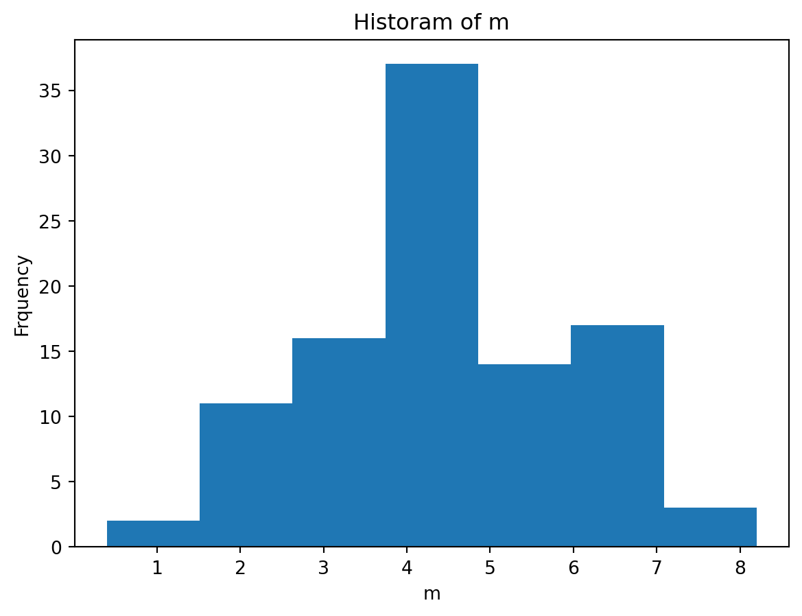

## 교재 출처 최하단에 표시 ##
# 예제 4: 0 ~ 9 까지 10 개의 정수값을 균등하게 갖는 모집단이 있다.
# (위 모집단의 분포를 이산균등분포라고 한다.)
# 예시: 전화번호 끝자리 번호의 분포
# (1) 여기에서 크기가 5 인 표본을 100 번 뽑아서
# (2) 매번 추출된 표본에서 표본평균을 구하고,
# (3) 그 평균들을 가지고 히스토그램을 그려라. (p.268)주어진 표본을 통해 모집단의 성격을 알아내는 과정을 추론 ( Inference )이라 한다.
그 통계적 추론에서 모집단의 특성을 추정하거나 가설 검정을 수행할 때, 사용되는 표집분포에 대해 다루고자 한다.
1. 자료의 입력
2. 통계량
Statistic
표본의 관측값들에 의하여 결정되는 양.
표본을 이용하여 모수에 대해 추론할 때, 표본에서 이용되는 적절한 양을 의미한다.
위 표본평균은 표본 X₁, …, Xn의 관측값에 의하여 결정되므로 “통계량” 이다.
마찬가지로 표본상관계수나 표본표준편차도 표본으로부터 계산하므로 통계량이다.
표본에서 계산한 통계량은 모수의 값을 추측하는데 쓰이게 되는데, 이때 유념하여야 할 3가지 조건이 있다.
표본은 단지 모집단의 한 부분에 불과하다.
그러므로, 표본으로부터 계산된 통계량의 값은 모수의 참 값과는 일반적으로 같지 않다:통계량의 값은 추출된 표본의 영향을 받는다:
다른 표본을 추출할 때마다 통계량의 값은 변한다:
3. 표집분포
Sampling Distribution
통계량의 확률분포.
여러 표본이 있을 경우, 통계량의 값들은 표집분포에 따라 변화하게 된다.
그리고 그 통계량이 편향 추정량인지 불편 추정량인지에 따라 표집분포의 성질이 달라진다.
3-1. 불편추정량
Unbiased Estimator
분포의 평균값이 추정하려는 모수와 일치하는 추정량.
불편추정량의 경우, 표집분포의 평균 (중심) 은 모수와 같다:
위 식이 성립할 때, 아래 식이 성립한다.
통계량의 분포는 모집단의 분포 ( 분산 ) 와 표본의 크기 n 에 영향을 받는다:
표집분포에서 사용되는 표본 크기 n 은 통계량의 분산과 추정의 정확성에 중점을 둔다.
아래에서 설명할 중심극한정리의 n 과는 다른 역할을 가진다.
3-2. 편의추정량
Biased Estimator
분포의 평균값이 추정하려는 모수와 일치하지 않는 추정량.
편의추정량의 경우, 표집분포의 평균은 모수와 다르다:
위 식이 성립할 때, 아래 식이 성립한다. 이 경우, 편향 ( Bias ) 도 고려해야 한다:
표본 크기를 늘리는 것만으로는 (불편추정량과 같은) 정확한 추정을 보장할 수 없다.
따라서, 추정량의 편향을 최소화하는 것이 중요하다.
3-3. 임의표본
Random Sample
일반적으로 크기가 큰 모집단으로부터 임의추출된 크기가 n 인 표본 X₁, …, Xn. 위 표본은 서로 독립이고, 모두 모집단의 분포와 동일한 분포를 갖는 것으로 간주된다.
3-4. 표본평균
Sample Mean
모평균 ( 모집단의 평균 ) 에 대한 추론에서 중요한 역할을 한다.
모평균은 모집단의 중심을 나타내는 수치로서 가장 많이 사용된다.
표본평균은 다음과 같이 정의된다:
표본 평균의 기댓값 (평균) , 분산, 표준편차는 아래 식과 같다:
4. 중심극한정리
Central Limit Theorem, CLT
표본의 크기 n 이 충분히 클 때, ( 보통 30 이상 )
모집단 분포 ( 연속이든 이산이든, 대칭이든 비대칭이든 ) 와 관계없이 표본 평균의 분포가 정규분포에 가까워진다.
이 정리는 많은 통계적 방법의 이론적 기초가 된다.
중심극한정리는 다음과 같이 정의된다:
Z : 표준 정규분포를 따르는 변수로, 표본 평균의 표준화된 형태를 나타낸다.
중심극한정리에서 사용되는 표본 크기 n 은 표본 평균의 분포가 정규분포에 근사하게 되는 성질에 중점을 둔다.
예제 4 ( 1 ) 크기가 5 인 표본을 100 번 뽑는다:
import numpy as np
a = np.random.randint(0, 100, size=5)
b = np.random.randint(0, 100, size=5)
np.random.seed(1) # seed의 숫자를 1로 고정한 경우
c = np.random.randint(0, 100, size=5)
np.random.seed(1) # seed의 숫자를 1로 고정한 경우
d = np.random.randint(0, 100, size=5)
print("a :", a)
print("b :", b)
print("c :", c)
print("d :", d)
## 해석: c, d에서 동일한 난수들이 추출됨을 확인할 수 있다.a : [ 2 17 4 90 42]
b : [99 73 67 33 12]
c : [37 12 72 9 75]
d : [37 12 72 9 75]( 2 ) 표본평균을 출력한다.
import numpy as np
m = []
np.random.seed(1234)
for i in range(100):
sample = np.random.randint(0, 10, size = 5)
m.append(np.mean(sample))
m = np.array(m)
print(m)[5.2 6.4 4.4 3. 5. 1.8 3. 3.4 5.4 7.8 3.4 4.8 4.8 4.8 6.4 4.8 4.4 6.
2.8 4.8 4.2 4.4 6.8 1.8 6. 4.6 3.2 2.4 2.8 6.2 3.2 6.8 5.8 5.8 4.4 5.
4.4 6. 3.6 4.8 4.8 4. 4.4 5.6 5.2 6.2 1.8 3.8 1.4 6.4 3.8 5.2 4.4 4.4
4.6 0.4 3. 5.8 2.2 4. 4.4 3.6 5.2 1.6 3.2 5.8 6.8 3.8 6.2 2.6 2. 4.8
2.6 6. 7.6 5.6 6. 3.6 4.2 3.8 5.2 3.4 8.2 4.6 6.8 3.8 4.2 3.8 4.6 2.4
4. 4.4 6. 4.4 2.6 3.4 6. 4.6 4.6 2.8]( 3 ) 그 평균을 가지고 히스토그림을 그려라.
import matplotlib.pyplot as plt
plt.hist(m, bins=7)
plt.xlabel('m')
plt.ylabel('Frquency')
plt.title('Historam of m')
## 해석: 정규분포와 유사한 종 모양 분포를 띄는 것을 통해
## 정규분포에 가까우리라 예상할 수 있다.Text(0.5, 1.0, 'Historam of m')
( 4 ) 데이터의 정규성을 보다 정확하게 평가하기 위해, 8장에서 배운 정규확률그림을 그려본다.
import matplotlib.pyplot as plt
import statsmodels.api as sm
sm.qqplot(m, line='s')
plt.title("Normal Q-Q plot")
## 해석: 점들이 거의 직선상의 있으므로
## 어느 정도 정규분포를 따른다고 할 수 있다.Text(0.5, 1.0, 'Normal Q-Q plot')